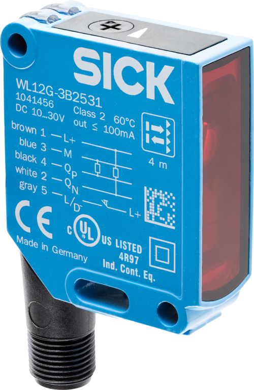

Find an intermittent fault in a machine sensor cable
Map a detached industrial harness pin by pin and reproduce a dropout under load while keeping the machine isolated.
Find out what moves when the fault happens
A photoelectric sensor counts every carton when the machine is still. When the carriage moves, its signal sometimes disappears. A broken strand, crimp or contact can reconnect after motion stops, so a fast continuity check can miss it. This lab uses two detached, passive, extra-low-voltage sensor cordsets. One is a known-good reference. Start with a documented four-pin A-coded M12 extension or a pigtail with both ends accessible. The customer leaves machine isolation, removal and reinstallation to the person authorised for the equipment.

Photo by Anordal, with on-page callouts. Original photograph · CC BY-SA 4.0.


Photo by Lucasbosch, scaled with on-page callouts. Original photograph · CC BY-SA 3.0.

Watch. Observe where ifm applies torque and why the connector shell bears the force. Use the actual cordset's tightening specification when fitted, and keep the load off the conductors. ifm's industrial connector mounting demonstration.
Map the cable with the source removed
Log machine and cable part numbers, mating type, coding, pin count and the exact locations where the cable moves. Ask for both mates or exact test adapters. Use the harness wiring table and the sensor's connection drawing. Pair connectors by their actual orientation. The wire colours in this ifm example are a model reference. ifm example with four-pin connection drawing.
Disconnect the cable from the sensor, controller, supply and any separate I/O device. Verify it is passive and identify any shield bonds before testing. Keep moulded modules with electronics, Ethernet cords, power leads and safety-rated sensors outside this exercise. Do not test across a connected PLC or sensor with a resistance range.
Short the meter leads to get a baseline. Use a mating breakout or pigtail to avoid spreading female contacts. With the cable at rest, measure each expected end-to-end route and check the six unordered pin pairs for unintended continuity on a four-wire one-to-one harness. For a shielded cable, use the specified pin-to-shell relationship. A handheld meter can detect a gross short within its range. It cannot certify insulation or sealing.
Make the intermittent fault repeat under load
Use an isolated 5 V bench supply limited to 60 mA, a 100 Ω resistor rated at least 0.5 W as the load and separate known-good return leads. Confirm the detached passive conductor and its breakouts are rated for this little test. Power off for every connection change.
Connect supply positive to one verified conductor at the near end. At the far end, connect that conductor to the 100 Ω resistor. Return the resistor to supply negative through the separate test lead. At nominal voltage the load draws about 50 mA, and the load has close to 5 V across it with a healthy short cable.
Clip the meter across the load in DC voltage mode. Compare the reference and suspect cable at rest using the same fixture and supply. Keep the test adapter still and gently move one short section of the cable at a time, staying inside the rated bend. Watch the reading at the shell or cable exit and through the known flex zone. Use MIN/MAX capture if your meter supports it and record its response limit. Very short dropouts can escape a slow meter.
Repeat the same movement with the reference. Swap the test adapter if both cables drop out. On the suspect cable show a repeatable dropout at the same location with a stable source. Test the other conductors one at a time before choosing a repair. If the bench cannot reproduce the fault, document that and return it for an installed check of the sensor and controller paths.
| Sample comparison | Result at the 100 Ω load | Next action |
|---|---|---|
| Reference and suspect, static | 4.98 V and 4.96 V | Static measurements alone give little evidence of the intermittent break. |
| Only suspect drops when gently moved at its plug exit | 4.96 V to near 0 V each time, source still about 5 V | Suspect that cable termination. Compare a known-good adaptor to rule out the mating fixture. |
| Both units drop at the breakout | Each drops when the fixture moves | Repair the test setup and repeat before quoting a customer part. |
Choose and prove the service
A failed moulded cordset is usually a matched replacement job. For supported field-wireable assemblies, use the connector maker's approved cable size, termination method, torque and strain relief, then repeat the complete map and loaded flex test. Match the service rating, especially flex duty, shielding and environmental exposure. Record the disposition and leave the return-to-service machine test to the installer. P89 checks the optical path · P82 covers sensor replacement · C19 shop pricing and scope.